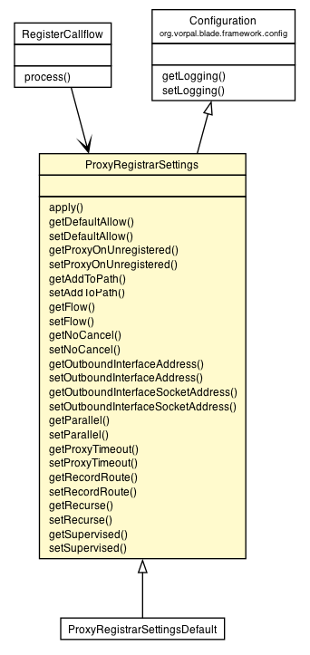

org.vorpal.blade.framework.config.Configuration
org.vorpal.blade.services.proxy.registrar.ProxyRegistrarSettings
org.vorpal.blade.framework.config.Configuration
org.vorpal.blade.services.proxy.registrar.ProxyRegistrarSettings
|
|||||||||
| PREV CLASS NEXT CLASS | FRAMES NO FRAMES | ||||||||
| SUMMARY: NESTED | FIELD | CONSTR | METHOD | DETAIL: FIELD | CONSTR | METHOD | ||||||||

java.lang.Object
public class ProxyRegistrarSettings
| Field Summary | |
|---|---|
protected java.lang.Boolean |
addToPath
Specifies whether branches initiated in this proxy operation should include a Path header for the REGISTER request for this servlet container or not. |
protected java.util.List<java.lang.String> |
defaultAllow
If no 'Allow' header is defined in the REGISTER method, use this value for 'Allow' for the 200 OK. |
protected javax.servlet.sip.Flow |
flow
Indicate that the specified flow be used while sending messages on this Proxy. |
protected java.lang.Boolean |
noCancel
Specifies whether the proxy should, or should not cancel outstanding branches upon receiving the first 2xx INVITE response as defined in RFC 3841. |
protected java.net.InetAddress |
outboundInterfaceAddress
In multi-homed environment this method can be used to select the outbound interface to use when sending requests for proxy branches. |
protected java.net.InetSocketAddress |
outboundInterfaceSocketAddress
In multi-homed environment this method can be used to select the outbound interface and port number to use for proxy branches. |
protected java.lang.Boolean |
parallel
Specifies whether to proxy in parallel or sequentially. |
protected java.lang.Boolean |
proxyOnUnregistered
Proxy the request to the 'To' header instead of issuing a 404 Not Found error. |
protected java.lang.Integer |
proxyTimeout
Sets the overall proxy timeout in seconds. |
protected java.lang.Boolean |
recordRoute
Specifies whether branches initiated in this proxy operation should include a Record-Route header for this servlet engine or not. |
protected java.lang.Boolean |
recurse
Specifies whether the servlet engine will automatically recurse or not. |
protected java.lang.Boolean |
supervised
Specifies whether the controlling servlet is to be invoked for incoming responses relating to this proxying. |
| Fields inherited from class org.vorpal.blade.framework.config.Configuration |
|---|
logging |
| Constructor Summary | |
|---|---|
ProxyRegistrarSettings()
|
|
| Method Summary | |
|---|---|
javax.servlet.sip.Proxy |
apply(javax.servlet.sip.Proxy proxy)
Apply default configuration values to the 'proxy' object. |
java.lang.Boolean |
getAddToPath()
|
java.util.List<java.lang.String> |
getDefaultAllow()
|
javax.servlet.sip.Flow |
getFlow()
|
java.lang.Boolean |
getNoCancel()
|
java.net.InetAddress |
getOutboundInterfaceAddress()
|
java.net.InetSocketAddress |
getOutboundInterfaceSocketAddress()
|
java.lang.Boolean |
getParallel()
|
java.lang.Boolean |
getProxyOnUnregistered()
|
java.lang.Integer |
getProxyTimeout()
|
java.lang.Boolean |
getRecordRoute()
|
java.lang.Boolean |
getRecurse()
|
java.lang.Boolean |
getSupervised()
|
void |
setAddToPath(java.lang.Boolean addToPath)
|
void |
setDefaultAllow(java.util.List<java.lang.String> defaultAllow)
|
void |
setFlow(javax.servlet.sip.Flow flow)
|
void |
setNoCancel(java.lang.Boolean noCancel)
|
void |
setOutboundInterfaceAddress(java.net.InetAddress outboundInterfaceAddress)
|
void |
setOutboundInterfaceSocketAddress(java.net.InetSocketAddress outboundInterfaceSocketAddress)
|
void |
setParallel(java.lang.Boolean parallel)
|
void |
setProxyOnUnregistered(java.lang.Boolean proxyOnUnregistered)
|
void |
setProxyTimeout(java.lang.Integer proxyTimeout)
|
void |
setRecordRoute(java.lang.Boolean recordRoute)
|
void |
setRecurse(java.lang.Boolean recurse)
|
void |
setSupervised(java.lang.Boolean supervised)
|
| Methods inherited from class org.vorpal.blade.framework.config.Configuration |
|---|
getLogging, setLogging |
| Methods inherited from class java.lang.Object |
|---|
clone, equals, finalize, getClass, hashCode, notify, notifyAll, toString, wait, wait, wait |
| Field Detail |
|---|
protected java.util.List<java.lang.String> defaultAllow
protected java.lang.Boolean proxyOnUnregistered
protected java.lang.Boolean addToPath
protected javax.servlet.sip.Flow flow
protected java.lang.Boolean noCancel
protected java.net.InetAddress outboundInterfaceAddress
protected java.net.InetSocketAddress outboundInterfaceSocketAddress
protected java.lang.Boolean parallel
protected java.lang.Integer proxyTimeout
protected java.lang.Boolean recordRoute
protected java.lang.Boolean recurse
protected java.lang.Boolean supervised
| Constructor Detail |
|---|
public ProxyRegistrarSettings()
| Method Detail |
|---|
public javax.servlet.sip.Proxy apply(javax.servlet.sip.Proxy proxy)
proxy -
public java.util.List<java.lang.String> getDefaultAllow()
public void setDefaultAllow(java.util.List<java.lang.String> defaultAllow)
public java.lang.Boolean getProxyOnUnregistered()
public void setProxyOnUnregistered(java.lang.Boolean proxyOnUnregistered)
public java.lang.Boolean getAddToPath()
public void setAddToPath(java.lang.Boolean addToPath)
public javax.servlet.sip.Flow getFlow()
public void setFlow(javax.servlet.sip.Flow flow)
public java.lang.Boolean getNoCancel()
public void setNoCancel(java.lang.Boolean noCancel)
public java.net.InetAddress getOutboundInterfaceAddress()
public void setOutboundInterfaceAddress(java.net.InetAddress outboundInterfaceAddress)
public java.net.InetSocketAddress getOutboundInterfaceSocketAddress()
public void setOutboundInterfaceSocketAddress(java.net.InetSocketAddress outboundInterfaceSocketAddress)
public java.lang.Boolean getParallel()
public void setParallel(java.lang.Boolean parallel)
public java.lang.Integer getProxyTimeout()
public void setProxyTimeout(java.lang.Integer proxyTimeout)
public java.lang.Boolean getRecordRoute()
public void setRecordRoute(java.lang.Boolean recordRoute)
public java.lang.Boolean getRecurse()
public void setRecurse(java.lang.Boolean recurse)
public java.lang.Boolean getSupervised()
public void setSupervised(java.lang.Boolean supervised)
|
|||||||||
| PREV CLASS NEXT CLASS | FRAMES NO FRAMES | ||||||||
| SUMMARY: NESTED | FIELD | CONSTR | METHOD | DETAIL: FIELD | CONSTR | METHOD | ||||||||